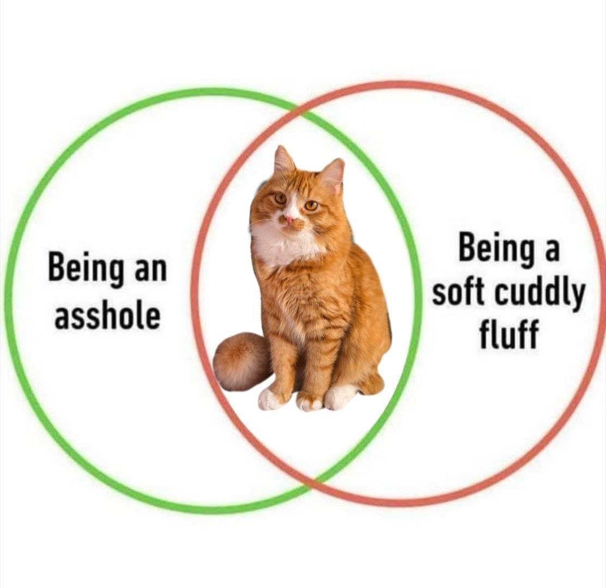

3 место Порванные шторы

Шторы в нашей квартире давно перестали быть просто шторами. Теперь это скалодром для мистера Чепы.
Каждый день он пытается взабраться по ним все выше и выше. Хотя казалось бы, куда еще выше, под потолком он уже побывал. Дырки? Да какие дырки… это ажурный узор авторской работы.
- Средняя высота подъёма: 2 метра
- Ущерб для кошелька: плачевный